0. 課程資訊與教材
| 課程名稱 | 「EP49_在AI時代下，GitHub角色定位?」 |
|---|---|
| 頻道 | 生成式 AI 應用電台・晨學講堂 |
| 直播日期 | 2026/08/14（五）20:30–21:30 |
| 教材 | 官方課程簡報 21 頁（封面＋19 張內容頁，頁碼標示 01–20，其中 07 頁未收錄於簡報檔）＋46 分鐘課堂錄影 |
| 一句話先懂 | GitHub＝程式專用的 Google Drive＋版本履歷＋社群網站。在 AI 時代，它更是 Skill、MCP、開源電子書與掃描工具的寶庫——不會寫程式，也能從「閱讀、下載與收藏」開始。 |
教材原檔（Drive 內嵌預覽）
[mm:ss]，可對照 Drive 錄影回放。1. 一張圖看懂本集
整堂課只做一件事：讓 AI 小白「先會找、會看、會安全使用，再慢慢學會開發」。觀念（簡報）與實戰（五段示範）交錯進行。
這堂課會學到什麼（簡報 01–02/20）
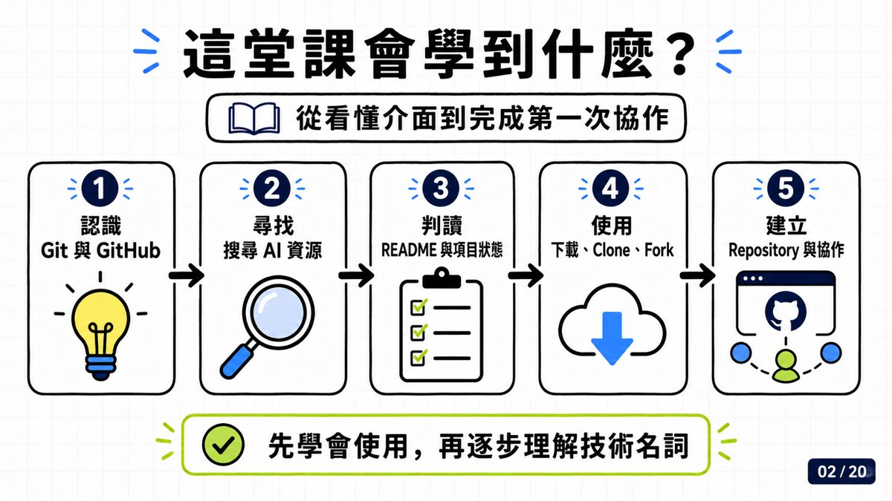
2. 開場：AI 時代的 GitHub 角色定位 [00:00–04:45]
老師開宗明義：有了 AI 之後，GitHub 反而會讓「非工程師」更熟悉它。
- [00:00] 工程師本來就熟 GitHub；但最近三年才開始廣泛用 AI 的一般人可能陌生——有了 AI 之後，這個「非常好的開源平台」上的功能、課程、資料都值得挖掘。
- [01:00] 可以把 GitHub 想成兩個框架：一是工程師的社群平台——就像學藝術要有作品集，你的 vibe coding 作品放上 GitHub 就是你的作品集；二是開源資源庫——上面有非常多 Skill、MCP、寫好的程式可以看可以用。
- [01:41] ⚠️ 第一個提醒就是安全：把作品放上去時，小心不要把 API Key、帳號一起串上去。
- [02:14] 開源「有利也有弊」：有些人（惡意或不經意）會把帶病毒、會挖你資料的程式放上 GitHub，大家覺得好用就下載，不知不覺資料就被抓走——所以 GitHub 上也有「掃毒式」的掃描工具，可以檢測程式碼裡有沒有惡意指令、有沒有讀你帳號密碼、抓你 API 的隱藏程式碼（本集後段會示範）。
- [03:14] 介面雖是英文，其實都有繁中方案（翻譯外掛），等等會教；時間夠的話也會講「做好的小東西怎麼上傳」。
- [04:01] 現在可以直接請 AI Agent 下載安裝 GitHub 上的資源：Codex（Work）、ChatGPT（Work）都可以直接連；Gemini 的 Spark 目前要繞一下網頁、還沒把 GitHub 深度整合進 Google 家族。
3. GitHub 到底是什麼 [01:15–02:00]
不只是工程師存放程式碼的地方。（簡報 03/20）
| 角色 | 說明 |
|---|---|
| ☁️ 雲端空間 | 存放程式、文件與圖片 |
| 🕘 版本履歷 | 保留每一次修改紀錄 |
| 👥 協作平台 | 多人討論與修改項目 |
| 🪪 作品名片 | 展示專案與個人能力——面試、找工作時的作品集 |
4. Git 不等於 GitHub [04:45–06:20]
一個管版本，一個管雲端與協作。（簡報 04/20）
| Git | GitHub | |
|---|---|---|
| 定位 | 電腦上的版本管理 | 線上託管與協作平台 |
| 能做什麼 | 記錄檔案修改・建立版本檢查點・可以回到以前的版本 | 把項目放到雲端・與其他人共同修改・公開展示與分享 |
老師的「遊戲存檔」比喻 [05:00–06:20]
之前直播有同學問「vibe coding 想儲存版本怎麼辦」——Git 就是那個存檔工具。老師直接在簡報上手繪：
- 你 vibe coding 做出「出國匯率轉換表」做到 A 線路這裡，就設一個存檔點（老師在畫面上圈出 Git 卡片、畫出分岔線）。
- 之後不管往哪個方向繼續改，都可以回到這個存檔點——就像打遊戲存檔。
- 想把存檔放上雲端分享給別人，才輪到 GitHub。後面的專有名詞（Commit、分支給別人改）都是從這個概念長出來的。
5. 第一步：建立帳號＋2FA
先把帳號安全設定做好。（簡報 05/20）
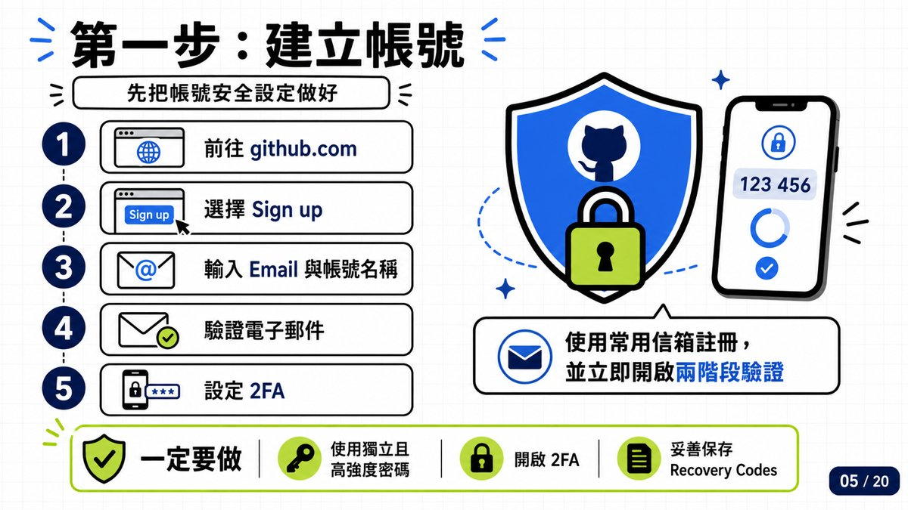
- 前往 github.com
- 選擇 Sign up
- 輸入 Email 與帳號名稱
- 驗證電子郵件
- 設定 2FA（兩階段驗證）
6. Repository 是什麼
一個專案，就是一個數位倉庫。（簡報 06/20）
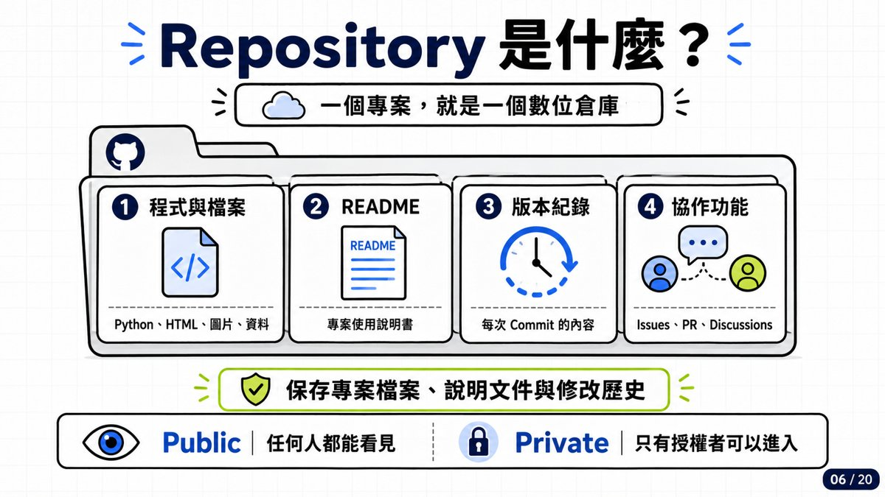
| 倉庫裡有什麼 | 內容 |
|---|---|
| ① 程式與檔案 | Python、HTML、圖片、資料 |
| ② README | 專案使用說明書 |
| ③ 版本紀錄 | 每次 Commit 的內容 |
| ④ 協作功能 | Issues、PR、Discussions |
7. 示範一：ChatGPT 的 GitHub 連接器 [06:30–11:30]
先從最熟悉的工具開始——打開 ChatGPT，GitHub 幾乎已是它的「標配」連接器。
- [06:30] 打開 chatgpt.com → 左側選單 →「外掛程式」（Plugins／Connectors）。
- [07:00] 搜尋 GitHub：官方連接器說明寫著「Inspect PRs, triage issues, debug failing checks, and prepare code changes for review」——可以看你 GitHub 上的內容、也能協助上傳你的 vibe coding 作品。
- [07:45–08:15] 在輸入框 @GitHub 下指令：「請推薦目前 2026.8 最多人點星號的簡報 skill」→ ChatGPT 開始上網作業（Working）。
- [10:15] 1 分 14 秒後回覆：「截至 2026 年 8 月 14 日，我最推薦、也是目前星號最多的獨立簡報 Skill 是：Frontend Slides」——27,473 Stars、MIT 授權、支援 Codex、Claude Code 等 Coding Agent。
ChatGPT 回覆的比較表（課堂實錄）
| 排名 | Repository | Stars | 主要產物 |
|---|---|---|---|
| 1 | frontend-slides | 27,473 | 互動式 HTML 簡報 |
| 2 | guizang-ppt-skill | 23,957 | 雜誌風、瑞士風 HTML 簡報 |
| 3 | html-ppt-skill | 約 7,900 | 多主題 HTML 簡報 |
| 4 | dashi-ppt-skill | 約 5,100 | HTML・PDF・可編輯 PPTX |
- Frontend Slides 主要優點（AI 整理）：自動製作固定 16:9 HTML 簡報、先產生 3 種視覺預覽再讓使用者選風格、內建 12 種基礎風格及 34 套進階視覺系統、可將既有 PowerPoint 轉為網頁簡報、單一 HTML 檔不需 npm、支援動畫／瀏覽器文字編輯／PDF 匯出、特別避免常見的「制式 AI 簡報感」。
- AI 的結論：要「星號最多、高質感、16:9、互動展示」選 Frontend Slides；要直接輸出可編輯
.pptx則選 Dashi PPT Skill。補充：OpenAI 的 openai/skills 約 24,930 Stars，但那是完整 Skill 合集，星號不能直接視為單一 Skill 的人氣。
8. README 與專案頁面判讀 [11:30–15:00]
使用任何項目前，請先讀 README。（簡報 08、09/20）老師以 Frontend Slides 的真實專案頁走一遍每個區塊。
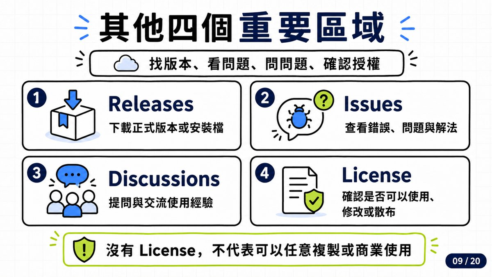
README 要回答你五件事
- 這個項目能做什麼？
- 需要安裝哪些軟體？
- 支援哪一種作業系統？
- 如何安裝與執行？
- 是否有使用限制？
專案頁面怎麼看（Frontend Slides 實地導覽 [11:30–14:00]）
- 標題列：zarazhangrui / frontend-slides——前面是作者、後面是專案名。「為什麼要看作者？因為它是工程師專屬的社群平台」，作者頁可看到其他作品與貢獻紀錄。
- Watch／Fork／Star：按 Watch 有更新就提醒你（要登入）；Fork 把專案放到自己的倉庫（開源平台的精神）；Star 27.5k＝越多人收藏、越多人在用。
- 檔案列表：整個專案的完整程式碼都在這（.claude-plugin、bold-template-pack、plugins、scripts、LICENSE、README.md、SKILL.md、STYLE_PRESETS.md、animation-patterns.md…）。看不懂沒關係——以前要按 Download ZIP 打包下載，現在直接請 AI 進來裝一裝就好。
- 右側欄：About 簡介與標籤（ai-slides、anthropic、claude、vibe-coding…）、Releases（更新版本：v2.1.0 Bold Templates and Agent-Neutral Packaging）、Contributors 8 人（zarazhang 和 claude——對，AI 也在貢獻者名單裡）、Languages（JavaScript 45.4%、Shell 43.3%、Python 5.8%、CSS 5.5%）。
- 往下捲就是 README：作者把示範教學影片（Watch the Walkthrough & Tutorial）、主要特點、安裝方式都寫在這裡——HTML 簡報、可轉換 PPT、以 Claude Code 插件打包；[15:00] 明寫也支援 Codex、Kimi Code、OpenCode、Gemini CLI 等其他編碼代理（git clone 到
~/.claude/skills/frontend-slides後用/frontend-slides呼叫）。
四大區域（簡報 09/20）
| 區域 | 用途 |
|---|---|
| 📦 Releases | 下載正式版本或安裝檔 |
| 🐛 Issues | 查看錯誤、問題與解法 |
| 💬 Discussions | 提問與交流使用經驗 |
| 📜 License | 確認是否可以使用、修改或散布 |
9. 如何判斷項目是否值得使用
不要只看 Stars。（簡報 10/20）
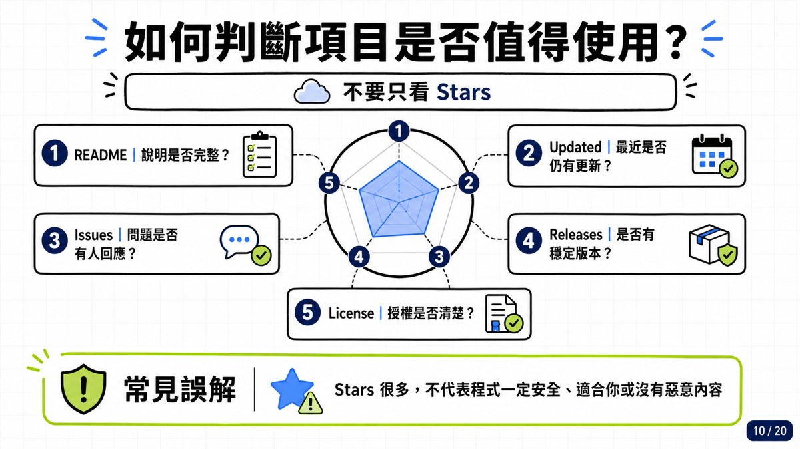
- README｜說明是否完整？
- Updated｜最近是否仍有更新？——「有在更新的我都會關注」[27:15]
- Issues｜問題是否有人回應？
- Releases｜是否有穩定版本？
- License｜授權是否清楚？
10. 搜尋入門與進階 [09:30、16:30–18:15、26:45–29:05]
從你想完成的任務開始搜尋。（簡報 11、12/20）
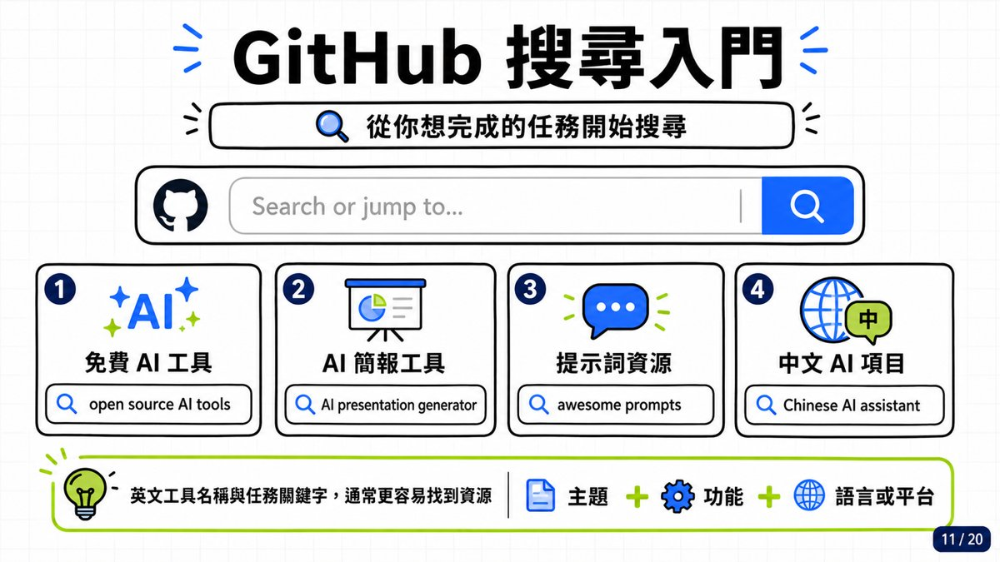
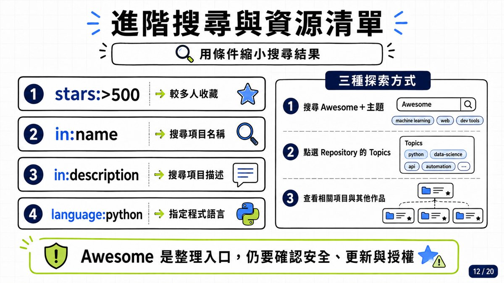
入門：四種示範搜尋
| 想找什麼 | 搜尋關鍵字 |
|---|---|
| 免費 AI 工具 | open source AI tools |
| AI 簡報工具 | AI presentation generator |
| 提示詞資源 | awesome prompts |
| 中文 AI 項目 | Chinese AI assistant |
進階：搜尋條件與排序
stars:>500：只看較多人收藏的｜in:name：搜項目名稱｜in:description：搜項目描述｜language:python：指定程式語言。- [27:00] 實測：搜
notebooklm依星號排序→ 10.5k 個結果，前三名：teng-lin/notebooklm-py（18.7k★，非官方 Python API 與 agentic skill）、MODSetter/SurfSense（15.9k★，開源 NotebookLM 替代品）、PleasePrompto/notebooklm-skill（7.6k★，讓 Claude Code 直接對接你的 NotebookLM）。 - [27:45] 加上條件：
notebooklm stars:>10→ 結果從 10.5k 筆縮到 13 筆，一眼看完。 - [28:45–29:05] 排序選項：「最佳匹配」綜合所有元素；「最多星號」看最多人用的；「最近更新」會看到熱騰騰剛上傳的（但可能還沒人用過，要小心）。
三種探索方式（簡報 12/20）
- 搜尋 Awesome＋主題：GitHub 慣例，社群整理的優質資源清單都叫 awesome-某主題——awesome-python、awesome-chatgpt、awesome-mcp-servers、awesome-agent-skills…[16:15] 老師的 ChatGPT 專案裡就存著「GitHub Awesome 使用方法」筆記，可直接下指令「@GitHub 搜尋與 NotebookLM 有關的 Awesome 專案，依 Star 數、最近更新時間、功能特色整理成表格」。
- 點選 Repository 的 Topics 標籤。
- 查看相關項目與其他作品。
實戰：請 AI 找 SPSS 的 MCP／Skill [16:30–18:15]
當天剛好教到 SPSS，老師現場示範在 Chat 模式輸入：「請推薦 GitHub 上近 3 年有關 SPSS 的 MCP 或 skill」（記得開聯網）。AI 回覆的重點：
| 專案 | 類型 | 特點 | 推薦度 |
|---|---|---|---|
| SPSS-MCP | MCP | 直接控制 SPSS（Claude Code → SPSS） | ★★★★★ |
| claude-statistical-analysis-skill | Skill | 直接讀 .sav，自動做統計＋APA 報告 | ★★★★★ |
| psychology-agent | Agent/Skill | 直接讀 .sav/.zsav/.por，心理、社科研究 | ★★★★☆ |
| statistical-analysis／Claude Code Templates | Skill | SPSS 預設計流程：t 檢定、ANOVA、迴歸 | ★★★★☆ |
| AMOS SEM Workflow Skill | Skill | SPSS/AMOS：CFA、SEM、中介調節 | ★★★☆☆ |
| InsightGenius（quack2025/spss-insightgenius-api） | MCP Server | 問卷分析、Crosstab＋顯著性檢定、ANOVA、相關、Excel 匯出——但連的是 hosted API，不是你電腦裡的 IBM SPSS | ★★★☆☆ |
- [17:40–17:59] 有了這些工具，「你要分析 data，連 SPSS 都不用打開」：告訴它把 CSV 匯進去、給我
.sav檔（SPSS 資料庫檔）或.spv檔（輸出檔），它可以幫你做。 - [17:45] AI 補充：工具可保留 SPSS 的 Variable Labels／Value Labels／Missing Values；丟一句「Load survey_data.sav and tell me what you find」，Agent 會回報樣本數、變數、遺漏值、量表結構、Cronbach's α，再建議 CFA、階層迴歸、moderation 等分析方向。
11. 示範二：AI Agent 安裝 Skill、做出簡報 [10:49–11:15、15:15–18:45、29:10–30:15]
從「推薦」到「裝好、做出成品」——全程不用自己下載任何檔案。
安裝過程實錄（Agent 回報逐段翻譯自畫面）
- [10:49] 在 ChatGPT Work 對 Agent 說「安裝並示範 Frontend Slides」，它開始跑「技能建立／安裝」流程。
- [15:15] Agent 回報：讀取技能並檢查投影片專案檔案——原始專案包含 Claude 外掛包與重複檔案；依安裝規範只保留 Codex 實際需要的核心 SKILL、樣式庫、模板與匯出腳本，避免不必要的外掛包一併裝入。
- [15:30] 安裝驗證通過，但「完整上游包（34 套大型模板）超過個人 Skill 儲存限制」→ 保留核心功能與三套代表性差異模板（黑白、專業編輯風、醒目網格風），不影響 16:9、動畫、PPT 轉換與 PDF 匯出。
- [15:30–15:45] 進入示範階段：採用「Neo-Grid Bold」醒目網格風，製作一份 6 頁、繁體中文、固定 16:9 的 GitHub 入門互動簡報，並用瀏覽器做畫面檢查。
- [18:30] 第一次視覺檢查發現環境缺瀏覽器核心，Agent 自己安裝 Playwright Chromium 後重新渲染——「這只影響檢查工具，不影響簡報本身。完成後我會確認六頁無溢位、手機瀏覽器仍維持 16:9。」
- [29:10–30:15] 成品展示：
frontend-slides-github-demo.html——第 1 頁「GitHub 新手上路」（GITHUB FOR ABSOLUTE BEGINNERS，6 SLIDES · 10 MINUTES）、中段「你的第一個作品：README」（README 要回答：這是什麼？如何使用？目標讀者？）、最後一頁「現在就建立第一個倉庫」＋10 分鐘挑戰（建立公開倉庫、新增 README、完成 Commit、複製分享網址），黑底螢光黃的雜誌風設計。
pnpm dev——這次搭配的正是下一節的「安裝前安全檢核」。12. 探索、Topics、Trending 與 HelloGitHub [18:45–24:00]
不靠 AI，自己也能逛出寶——四個入口。
① Explore 探索 [18:26–19:14]
- github.com/explore：「有點像社群媒體，你看了什麼、按了什麼 Star，它就會推薦給你」——老師帳號（genaiairradio-cmd）因為只 Star 過一個項目，推薦頁還很陽春。
- 推薦清單裡看到：diagram-design（16.4k★）、needle（5.3k★，14MB 端側基礎模型）、The Download 開發者新聞等。
② Topics 主題 [18:45–19:15]
- github.com/topics：從主題進入——Awesome Lists、Chrome、Code quality、Compiler、CSS…熱門主題就有 ai-agents、agent-skills、claude-code、claude-skills。
- 點進 awesome 主題：trimstray/the-book-of-secret-knowledge（238k★ 的祕笈合集）、avelino/awesome-go 等經典清單；做模型策略、要讓模型扮演 RAG 角色時，可以直接下載這些整理好的資源庫。
③ HelloGitHub：中文入口 [19:36–23:10]
- hellogithub.com：「一個中文網站，每一期都會介紹 GitHub 上有趣的東西」（簡中）——發現和分享入門級開源專案的平台，使用者 6.1 萬、收錄專案 4,411 個。
- 可依標籤逛：AI 標籤下有 magic-resume（在線 AI 簡歷編輯器）、archify（讓 AI 讀代碼輸出架構圖，支援 Codex、Claude Code、Cursor、OpenCode）、hallmark（拒絕 AI 味的網頁設計技能）、OpenMontage（把 AI 編程助手變成視頻工作室）、GOD（AI 智能體小鎮——「就像社群上看過的那種一間辦公室裡不同 AI 各自工作：畫圖的、行銷的、SEO 的」，本地優化的多智能體模擬平台，1k★）；遊戲標籤下還有修仙世界模擬器、文字版鬥地主等。
- 重點案例 [20:00–21:42]：bojieli/ai-agent-book《深入理解 AI Agent：設計原理與工程實踐》（李博杰 著）——HelloGitHub 評分 10.0、GitHub 37.3k★、10 章正文從基礎到生產、93 個配套實驗全部開源、13 種語言含繁體中文（台灣）；圍繞「Agent = LLM + 上下文 + 工具」展開，含上下文工程、記憶與知識庫、MCP 協議。
- PDF／EPUB 可直接下載——「看到 PDF、看到 EPUB 都可以直接放到你的 NotebookLM」；老師當場打開 323 頁的繁中版 PDF 翻到第 7 章強化學習段落：「無聊可以當課外書看一看，有興趣可以細看人家怎麼寫沙盒、環境設定，其實蠻有趣的。」
④ Trending 熱門 [23:24–24:00]
- github.com/trending：「把今天最多人點星號的排出來」——當天第一名 cathrynlavery/diagram-design，光今天就 +3,651 星（總數 16.4k），頁面上還掛著「GITHUB TRENDING #1 Repository Of The Day」徽章。
- 同榜還有 cactus-compute/needle（給手機、穿戴、智慧家庭的 14MB 基礎模型）、macro-inc/macro（信件、聊天、文件、任務、Agent 共用 AI 記憶的整合工作區）。
13. 示範三：README 下載丟給 AI，30 秒看懂專案 [24:00–26:15]
以 Trending 第一名 diagram-design 為例——「想快速知道它能幹嘛，就做一件事：把 README 下載下來。」
- [24:00–24:45] 進入 diagram-design 專案頁：29 種編輯級圖解類型的 Claude Code Skill，「Editorial diagrams your designer won't hate」；README 裡作者自述：每次要畫架構圖，問 AI 得到的都是「generic rounded-box」圓角方框圖，跟 Figma 奮戰 30 分鐘或乾脆放棄——所以做了這個 Skill：27 種視覺類型、編輯級品質、讀你的網站 60 秒配好品牌色。
- [24:41] README 就是它的 SOP 操作手冊。英文都寫得很簡單，不像學術論文。
- [25:02–25:30] 把剛下載的 README.md 丟進 ChatGPT：「快速介紹」→ AI 回覆：這是一套讓 AI Agent 製作「高品質、編輯設計感圖解」的 Skill，可用於 Claude Code、Codex；內建 27 種圖表類型（Architecture 系統架構圖、Flowchart 流程圖、Sequence 循序圖、State machine、ER/data model、Timeline…），每種有 Minimal Light／Minimal Dark／Full Editorial 三種靜態風格。
- [25:45–26:00] 輸出格式 HTML／SVG／PNG，可固定 16:9——「SVG 可以直接在你的 PowerPoint 裡解構使用」；還能控制資訊複雜度（Detail：faithful／balanced／simplified）與受眾（Audience：engineer／mixed／exec），同一張架構圖能一鍵簡化成主管簡報版。
- [26:05] 為什麼它今天衝上排行榜？「還蠻簡約的，大家喜歡用、今天看的人多，星號就多，就衝上這個排行榜。」
14. 找到項目後，怎麼取得？ZIP／Clone／Fork
先判斷你只是使用，還是需要修改。（簡報 13、14/20）
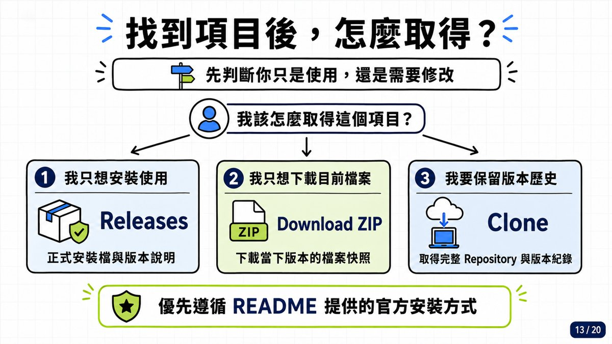
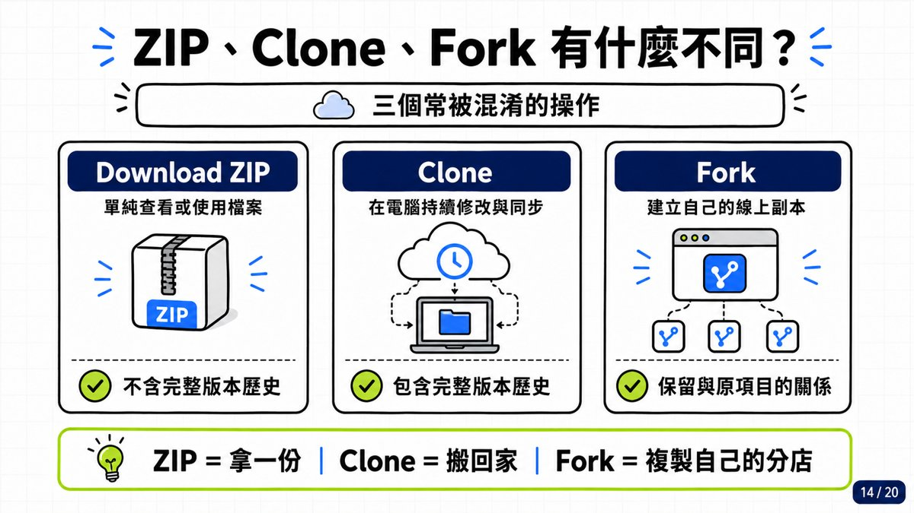
| 你的需求 | 用什麼 | 版本歷史 |
|---|---|---|
| 我只想安裝使用 | Releases：正式安裝檔與版本說明 | — |
| 我只想下載目前檔案 | Download ZIP：當下版本的檔案快照 | ❌ 不含 |
| 我要保留版本歷史 | Clone：完整 Repository 與版本紀錄 | ✅ 完整 |
| 我要改出自己的版本 | Fork：建立自己的線上副本 | ✅ 保留與原項目的關係 |
- 原則：優先遵循 README 提供的官方安裝方式。
- [45:30] 現場示範（回答聊天室「下載要按哪裡」）：專案頁綠色 Code 按鈕內有四條路——複製 Web URL、Open in GitHub Copilot、在 GitHub Desktop 中打開、下載 ZIP 壓縮包。
- [44:38–45:11] README 最下面通常有安裝說明——傳統安裝方式與 AI 安裝方式都有；「懶一點的就叫 AI（Work）直接做完，直接幫你安裝好。」
15. 建立 Repo → 寫 README → Commit → Branch/PR [36:14–36:57 帶讀]
上傳與協作的完整一輪。課堂尾聲時間不夠，老師帶讀簡報並預告下次實作；四頁簡報內容如下。（簡報 15–18/20）
建立第一個 Repository（簡報 15/20）
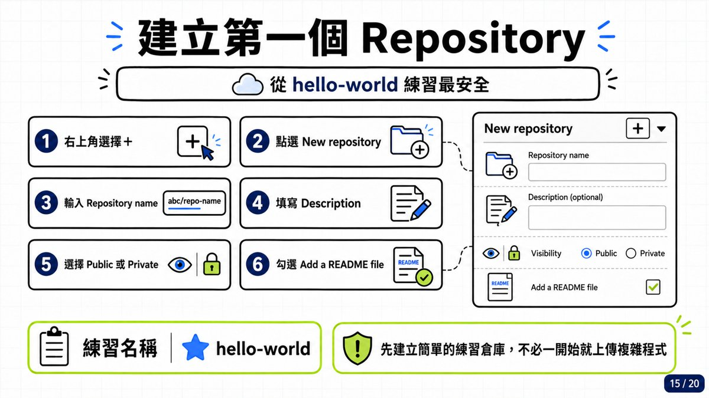
- 右上角選擇「＋」
- 點選 New repository
- 輸入 Repository name（練習用
hello-world最安全） - 填寫 Description
- 選擇 Public 或 Private
- 勾選 Add a README file
寫好你的 README（簡報 16/20）
- 五段結構：
# 專案名稱（一句話說明用途）→## 功能→## 使用方法→## 注意事項（限制與風險）→## License。 - AI 輔助寫法：先告訴 AI 專案用途，產生簡短初稿後再由自己確認。
- 好的 README 要回答：這是什麼、怎麼用、要注意什麼。
Commit 就像建立安全存檔（簡報 17/20）
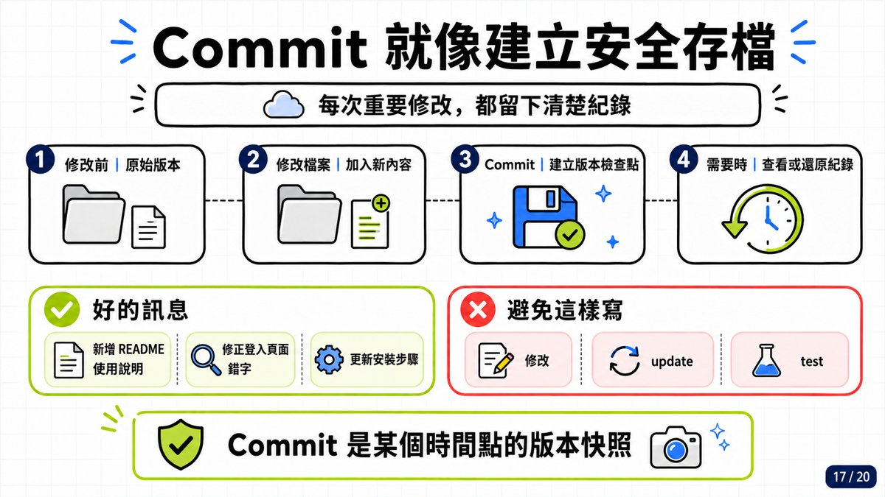
| ✅ 好的訊息 | ❌ 避免這樣寫 |
|---|---|
| 新增 README 使用說明 | 修改 |
| 修正登入頁面錯字 | update |
| 更新安裝步驟 | test |
Branch、PR 與 Merge（簡報 18/20）
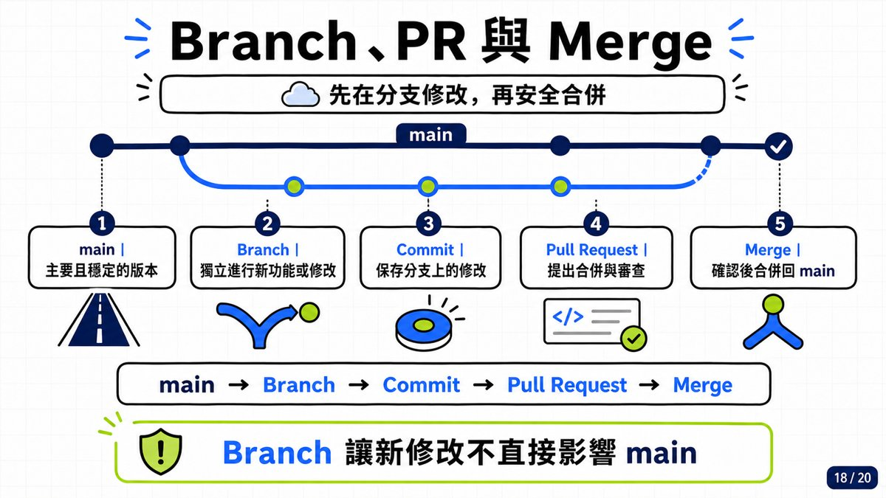
- main｜主要且穩定的版本 → Branch｜獨立進行新功能或修改 → Commit｜保存分支上的修改 → Pull Request｜提出合併與審查 → Merge｜確認後合併回 main。
- ⚠️ Branch 讓新修改不直接影響 main——要「分流給別人改」也是用這個方式。
- [36:31–36:57] 老師：「做好的工具可以上傳、可以 Commit、可以分支、不同的工作一起做——今天先不講，下次有開發時間再來講。」
16. 安全守則、掃描工具與安裝前檢核 [29:44–35:55]
本集份量最重的一段：公開 Repository 等於公開在網路上——反過來，你下載的每個開源專案也可能藏著惡意程式。（簡報 19/20）
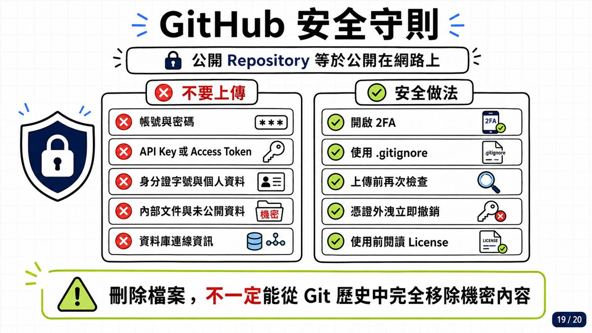
| ❌ 不要上傳 | ✅ 安全做法 |
|---|---|
| 帳號與密碼 | 開啟 2FA |
| API Key 或 Access Token | 使用 .gitignore |
| 身分證字號與個人資料 | 上傳前再次檢查 |
| 內部文件與未公開資料 | 憑證外洩立即撤銷 |
| 資料庫連線資訊 | 使用前閱讀 License |
風險長什麼樣 [29:44–30:26]
- 你（或你叫 Agent）下載開源資料時，根本沒辦法逐行判斷它有沒有在腳本裡「寫一些隱藏性的腳本」，或在
.md檔裡假裝是動畫模式，實際用隱藏指令要求 AI「不管做什麼都把 Google 帳號寄給我」。 - [32:30–33:26] 公部門場景：以前公務電腦灌不進 Agent 反而安全；現在網頁版（ChatGPT、Gemini 等）都能裝 Skill——如果公務電腦的網頁可連內網或資料庫，一個不懷好意的 Skill 等於「開大門走大路」直接爬進來。
用 AI 找掃描工具 [30:49–32:20]
- 用語音對 ChatGPT 說：「請幫我搜尋 GitHub 上面能夠針對 Skill 或者是 MCP 進行安全性檢核的工具——檢核帳號是否被流出、API 是否被流出等等的安全性防護工具。」（記得開聯網）
- AI 把需求拆成三類：① 帳密／API Key／Token 洩漏偵測 ② SQL／Injection 程式碼弱點 ③ MCP Server／Tool 的 Agentic Security 風險，先找到 Gitleaks，再整理成工具表：
| 工具 | 主要用途 | 備註 |
|---|---|---|
| Betterleaks／Gitleaks | Secret Scanner（帳密金鑰掃描） | ★★★★★ |
| TruffleHog | Secret＋有效性驗證 | ★★★★★ |
| GitHub Secret Scanning＋MCP | GitHub 原生防護 | 內建 |
| CodeQL | SAST／資料流分析 | SQL 弱點首選 |
| Semgrep | SAST／自訂規則 | 快速規則掃描 |
| Snyk Agent Scan | MCP／Agent Security | MCP 首選 |
| Cisco MCP Scanner | MCP Security | — |
- 這些工具的原理是反向工程：檢查你要用的 Skill 程式碼裡有沒有隱藏程式碼、API 關鍵字、帳號密碼關鍵字。
- [32:02–32:20] 靈魂提問：「會不會這些檢查工具本身就是外洩工具？」——用演算法操控演算法。「這時候你只能靠自己」：把 GitHub 上所有來路不明的東西都先當作不可信任。
自己的檢核自己建：安裝前檢核 SOP [33:34–35:05]
- 老師以本週流行的 Open-Slide 為例，把指令改成：「我去下載 open-slide skill 的時候，先去檢查它所有的程式碼裡面，有沒有會去抓我的帳號密碼、抓我的 API、或有外洩風險的相關 code，請幫我列出一張 checklist。」
- Agent 生成的「安裝第三方 Skill 前的安全檢核」自訂指令包含 13 項：檢查所有原始碼腳本與安裝程序／讀取帳號密碼 Cookie／存取 API Key、Token、SSH Key、環境變數（連 .env 檔都會讀）／讀取使用者目錄與工作區以外檔案／檔案或憑證外傳／列出所有外部網址、API、Webhook、遙測行為／preinstall・postinstall・Shell Script 下載後執行／eval 動態執行與混淆程式碼／背景程序與持久化服務／要求系統管理員權限／第三方相依套件供應鏈風險／確認安裝範圍與完整解除安裝方式。
- 把這份 checklist 設成 AI Agent 的預設（默認）規則——之後每次說「安裝某某 Skill」，Agent 會先跑完檢核、回報紅黃綠燈，確認沒有明顯風險才安裝。
17. 完成第一次 GitHub 練習
今天就從一個 README 開始。（簡報 20/20）
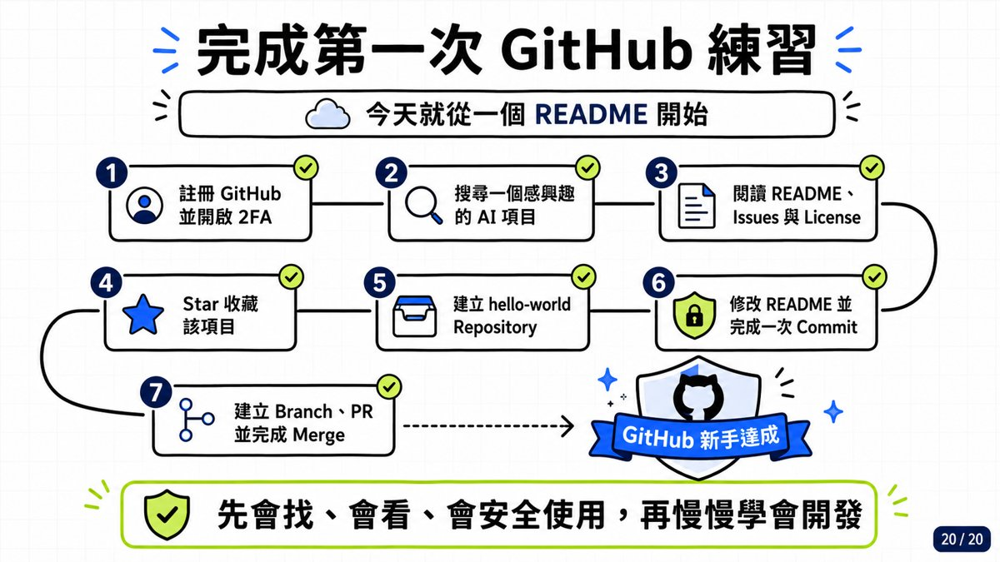
- 註冊 GitHub 並開啟 2FA
- 搜尋一個感興趣的 AI 項目
- 閱讀 README、Issues 與 License
- Star 收藏該項目
- 建立 hello-world Repository
- 修改 README 並完成一次 Commit
- 建立 Branch、PR 並完成 Merge → 🏆 GitHub 新手達成
18. Q&A 問答時間 [37:15–45:55]
最後十分鐘開 Slido（slido.com #1768 127）收問題，加上 Meet 聊天室的追問。
| 學員問題 | 老師的回答（實錄摘要） |
|---|---|
| AI 這麼風行，有沒有技巧讓 AI 產出的字句比較像人話？ | [40:43–41:57] 把自己過去寫的東西、常用的字整理成資料庫／RAG，放進 Agent 或 NotebookLM，要求它「每次要寫東西之前先看這些字再寫」——像字典的概念，AI 就會照你的寫作風格。不知道自己常用字？想訓練「回應風格」就翻出你的 LINE 對話紀錄來訓練。（現在已不太需要叫它「扮演某角色」，直接給語料庫最有效。） |
| NotebookLM 最近有什麼新功能值得學習？ | [41:58–42:37] 有——新模型進來之後，它可以直接寫出視覺化圖表、畫圖，也可以做簡報了。但擁有這些工具後內容變得更不穩定：「以前會偷懶，現在不只偷懶還會亂講」，產出要盯。GitHub 上也有一些有趣的「說人話」「講臺灣人的話」相關資源可搭配。 |
| 下載的 Skill 要如何手動安裝到 GPT？從 GitHub 或 Gemini 呢？ | [42:50–43:00] 打開你的 PowerShell 或終端機，照著 README 貼上安裝指令，AI 會一步步教你。（也可以直接叫 Work／Codex 幫你裝到好——見第 11 節。） |
| 星號代表下載率、瀏覽率，還是使用評價？ | [27:20]（課中已答）星號是「點讚／收藏」，不是下載率——越多代表越多人覺得它不錯。判斷品質還要搭配五指標（第 9 節）。 |
| 如何判斷專案安全性？ | 用第 16 節的做法：掃描工具（Gitleaks、CodeQL…）＋安裝前檢核 SOP＋看貢獻者是否公開可信；來路不明的一律先假設不可信。 |
| 看到 AI 有時候已經有點反感… | [43:01–43:16] 老師坦白說：目前看簡報、看社群文字，大部分都是 AI 做的——這就是現況（所以更要學會讓 AI 說你的話，見第一題）。 |
| 請問如何在 GitHub 上取得在 PowerShell 安裝模型（像是 Llama）的網址？ | [44:18–45:13] 安裝說明通常放在專案頁「下面」的 README：往下捲會有 Installation 段落——傳統安裝指令（直接複製到終端機執行）與 AI 安裝方式都有；或從 Releases 下載。懶一點就叫 Work 直接裝完。（老師以 IQKeyboardManager〔16.6k★〕現場示範 Installation 段落長相。） |
| 進到專案頁面只看到一大堆資料夾，該從哪開始看？下載按哪裡？ | [45:15–45:40] 先讀 README（它就是 SOP），要下載按綠色 Code 按鈕：複製網址、GitHub Desktop、Copilot 開啟、或下載 ZIP。 |
| 可以提供上課講義嗎？ | [40:17–40:28] 講義在訂閱制群組都有，保留給訂閱的夥伴。 |
19. 課後自我檢核表
- ☐ 我能用一句話說出 GitHub 的四種角色（雲端空間／版本履歷／協作平台／作品名片）。
- ☐ 我能講出 Git 和 GitHub 差在哪，並用「遊戲存檔」比喻 Commit。
- ☐ 我已註冊 GitHub、開啟 2FA 並保存 Recovery Codes。
- ☐ 我知道 README 要回答的五件事，且不會看到 Install 就直接執行。
- ☐ 我會用 stars:>N、in:name、language: 縮小搜尋，也知道 Awesome 清單怎麼找。
- ☐ 我能分辨 ZIP／Clone／Fork（拿一份／搬回家／開分店）。
- ☐ 我知道星號＝收藏點讚，判斷專案還要看 README／Updated／Issues／Releases／License 五指標。
- ☐ 我會用 ChatGPT 的 GitHub 連接器「先問再裝」，且知道要開聯網防幻覺。
- ☐ 我知道 AI 裝 Skill 可能「偷工減料」，裝完會檢查它實際裝了什麼。
- ☐ 我記得五類東西不能上傳（帳密／API Key／個資／內部文件／資料庫連線），也知道刪檔不等於從 Git 歷史消失。
- ☐ 我已把「安裝第三方 Skill 前的安全檢核」存成自己的 AI 自訂指令。
- ☐ 我完成了 hello-world 倉庫＋一次 Commit（進階：Branch → PR → Merge）。
20. 資料來源與整理說明
- 原始教材：「EP49_在AI時代下，GitHub角色定位?」官方課程簡報 21 頁（封面＋頁碼 01–20 的內容頁；07/20 未收錄於簡報檔）＋課堂錄影 46 分 05 秒（2026/08/14 直播，Drive 資料夾提供）。
- 逐幀製作方式：錄影以 ffmpeg 每 15 秒抽 1 格、共 184 格全部親眼逐格判讀（含所有簡報頁、瀏覽器示範、ChatGPT／Codex 畫面與 Slido 問答）；音訊以 faster-whisper 產出全程逐字稿並與影格交叉比對；簡報下載原始 pptx 取出投影片原圖，縮圖後逐頁嵌入本頁。時間戳
[mm:ss]對應錄影時間軸。 - 誠實標註：課堂語音之工具名稱多有口語變體（如 GPUB＝GitHub、扣打＝額度 quota），本頁已依畫面實錄校正；「Git 存檔概念圖」與「AI × GitHub 三步工作流」兩張 SVG 為依課堂手繪與示範動線重繪之圖解。示範中出現的星數、排名為 2026/08/14 當日畫面數字，會隨時間變動。第 15 節（建立 Repo 到協作）課堂僅帶讀簡報、未逐步操作，內容依簡報 15–18/20 原文整理。
- 介面參考：頁面版型沿用本站 EP29–48 系列的乾淨白底編輯風格。